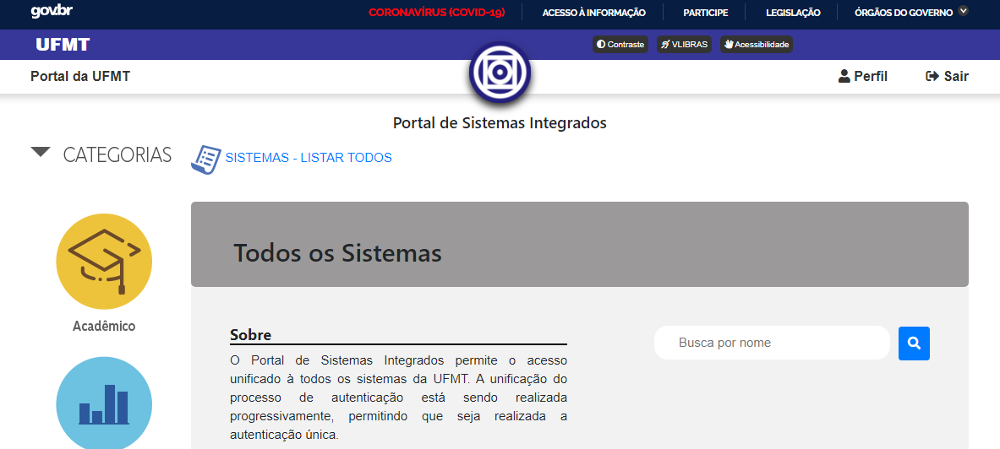

Servidores aposentados - Como obter um usuário
1 - Introdução
Para votar como servidor(a) aposentado(a) você previamente deve ter acesso ao Portal de Sistemas Integrados da UFMT, utilizando o seu CPF e uma senha.
Caso você, antes de se aposentar, já acessava o Portal de Sistemas Integrados com o seu CPF, verifique se o seu acesso está ativo.
Para isso, acesse o endereço https://sistemas.ufmt.br/ufmt.portalsistemas, informe seu CPF e sua senha e clique em acessar.
Se for exibida a interface mostrada na Figura 1, isto mostra que você está autenticado(a) e apto(a) a acessar os sistemas da UFMT. Logo, poderá concluir o processo de votação na Consulta Prévia para escolha de Reitor(a) e Vice-Reitor(a).
 Figura 1
Caso seja mostrada a mensagem "Senha de acesso do usuário inválida", como mostra a Figura 2, siga os procedimentos para a recuperação de sua senha na seção 2 - Recuperação de senha.
Figura 2
Caso seja mostrada a mensagem "Nome de acesso de usuário inexistente", como mostra a Figura 3, você precisa se cadastrar como um novo usuário. Para isto, siga os procedimentos para a o cadastro de um novo usuário na seção 3 - Cadastro de usuário.
Figura 3
2 - Recuperação de senha
-
Se você esqueceu sua senha, basta acessar o endereço https://sistemas.ufmt.br/ufmt.sia/Usuario/ReiniciarSenha.
-
Na tela apresentada, informe seu CPF e clique no botão 'Reiniciar senha'. Atenção: clique apenas uma vez.
Figura 1
-
Depois de informar o seu CPF, você deve ter uma confirmação de envio semelhante a essa.
-
Verifique seu e-mail (e também a caixa de spam). A mensagem pode levar de 5 a 15min para chegar. Clique no endereço recebido.
-
Depois de clicar, uma página será exibida. Informe seu CPF e sua nova senha. Repita a sua senha no campo de confirmação.
-
Tendo sucesso, uma tela de confirmação será exibida.
3 - Cadastro de Usuário
-
Para criar um usuário, basta acessar o endereço https://sistemas.ufmt.br/ufmt.sia/Usuario/Cadastro
-
Na tela apresentada, informe seu CPF, seu SIAPE de aposentado e um e-mail válido.
-
Depois de informar seus dados corretamente, você deve ter uma confirmação de envio semelhante a essa.
-
Verifique seu e-mail (e também a caixa de spam). A mensagem pode levar de 5 a 15min para chegar. Clique no endereço recebido.
-
Depois de clicar, uma página será exibida. Informe seu CPF e sua nova senha. Repita a sua senha no campo de confirmação.
-
Tendo sucesso, uma tela de confirmação será exibida.